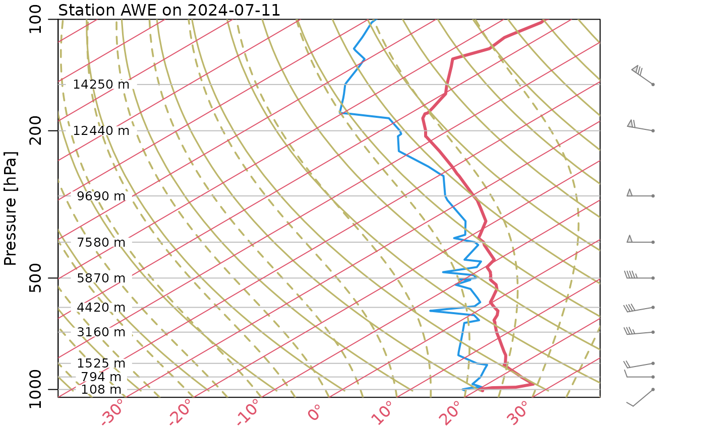

This is a preliminary version. Over time, it might be evolved to plot something nearer what is shown at Reference 1.
Arguments
- sounding
the result of a call to
readAtmosphericSounding().- item
character value indicating what to plot. At the moment, the only choices is the default,
"DWPT+TEMP".- legend
logical value indicating whether to show a legend in the top- left corner. This is FALSE by default.
- mar
4-element numeric vector specifying margins, in the standard way (i.e. this is handed to
par()by this function). The default is set to give space for height indications in the right margin.- mgp
3-element numeric vector specifying axis spacing, in the usual way (i.e. this is handed to
par()by this function). The default removes some whitespace in the margins.- debug
an integer specifying whether information is to be printed during processing. The default, 0, means to avoid such printing. Any positive value means to print some information. (That information will vary over the course of evolution of the code, so do not rely on particular behaviour.)
References
https://www.noaa.gov/jetstream/upperair/skew-t-log-p-diagrams
Visual Explanation of Meteorological Skew T Log P Sounding Diagrams, 2019. https://www.youtube.com/watch?v=7p7c85hhgOo.
Examples
library(atmosphere)
# Normally, would download the file with downloadAtmosphericSounding()
file <- system.file("extdata", "Shearwater_2024-07-11.txt.gz", package = "atmosphere")
sounding <- readAtmosphericSounding(file)
plot(sounding)
#> TT=20

#> pressure height Tdry
#> 1 1008.0 38 19.6291367
#> 2 1000.0 108 18.9459673
#> 3 999.0 117 18.8581313
#> 4 989.0 204 18.0090494
#> 5 986.0 231 17.7455412
#> 6 977.8 305 17.0233337
#> 7 967.0 403 16.0668966
#> 8 944.5 610 14.0466673
#> 9 925.0 794 12.2509080
#> 10 912.3 914 11.0797606
#> 11 880.7 1219 8.1030942
#> 12 858.0 1445 5.8974333
#> 13 850.0 1525 5.1166683
#> 14 820.2 1829 2.1497616
#> 15 808.0 1957 0.9005376
#> 16 791.1 2134 -0.8269048
#> 17 763.0 2438 -3.7938116
#> 18 735.7 2743 -6.7704779
#> 19 700.0 3160 -10.8402151
#> 20 661.0 3632 -15.4467283
#> 21 658.9 3658 -15.7004769
#> 22 650.0 3769 -16.7837882
#> 23 630.0 4024 -19.2724765
#> 24 613.0 4246 -21.4390992
#> 25 611.4 4267 -21.6440500
#> 26 596.0 4474 -23.6642793
#> 27 581.0 4679 -25.6649894
#> 28 566.7 4877 -27.5973827
#> 29 535.0 5337 -32.0867811
#> 30 521.0 5547 -34.1362890
#> 31 506.0 5777 -36.3809882
#> 32 504.0 5808 -36.6835347
#> 33 500.0 5870 -37.2886275
#> 34 499.0 5886 -37.4447805
#> 35 491.0 6012 -38.6744853
#> 36 485.7 6096 -39.4942884
#> 37 482.0 6155 -40.0701026
#> 38 467.0 6400 -42.4611952
#> 39 451.0 6668 -45.0767578
#> 40 448.8 6706 -45.4476211
#> 41 446.0 6754 -45.9160801
#> 42 407.0 7450 -52.7087351
#> 43 400.0 7580 -53.9774781
#> 44 397.9 7620 -54.3678606
#> 45 390.0 7770 -55.8317948
#> 46 382.0 7925 -57.3445269
#> 47 382.0 7924 -57.3347673
#> 48 351.0 8551 -63.4540125
#> 49 323.5 9144 -69.2414327
#> 50 308.0 9502 -72.7353558
#> 51 300.0 9690 -74.5701534
#> 52 265.0 10567 -83.1292890
#> 53 261.2 10668 -84.1150048
#> 54 250.0 10970 -87.0623924
#> 55 227.0 11617 -93.3768289
#> 56 207.9 12192 -98.9885769
#> 57 207.0 12219 -99.2520851
#> 58 204.0 12313 -100.1694839
#> 59 200.0 12440 -101.4089482
#> 60 185.0 12937 -106.2594504
#> 61 180.0 13110 -107.9478546
#> 62 179.0 13145 -108.2894392
#> 63 173.0 13359 -110.3779855
#> 64 163.4 13716 -113.8621490
#> 65 159.0 13888 -115.5407936
#> 66 150.0 14250 -119.0737550
#> 67 148.2 14326 -119.8154817
#> 68 134.1 14935 -125.7590548
#> 69 128.0 15221 -128.5502894
#> 70 127.6 15240 -128.7357211
#> 71 121.4 15545 -131.7123875
#> 72 120.0 15613 -132.3760376
#> 73 112.0 16035 -136.4945727
#> 74 109.8 16154 -137.6559606
#> 75 102.0 16608 -142.0868016